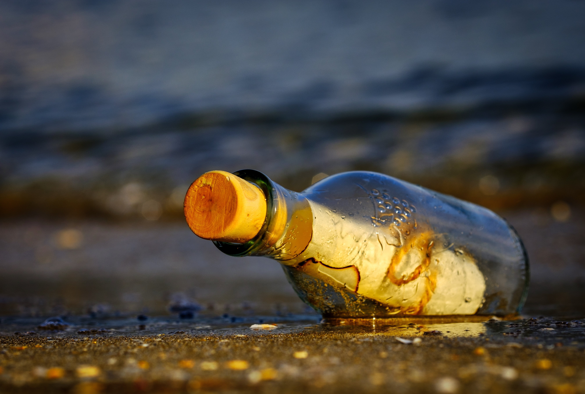

Latest posts
#0. I'll send my S.O.S. to the world...
Posted on August 1st, 2026
In 2026 AD, with its overly-stimulating internet (of which I am a guilty consumer), why would anyone spend
their time in creating a static, early-2000, pure HTML website?
The first answer would be: because it's fun. Especially if you decide to embark on self-hosting
(which is my current plan, even though the website is completely offline as I'm writing), handcrafting your
own web space can teach you a lot about how "real" websites and the Internet work. Considering I had never used HTML or CSS before,
this website was worth the effort even just as an educational project. I'm not sure this will be an ice-breaker at parties, but I'm used to that.
Second answer: since the days of my first account on the early LEGO website,
I have always looked for some kind of self-expression platform online. Even just from a professional standpoint, I think it's nice
to have some place where you can nicely collect everything that you are doing, like a virtual business card. Over the years, I have
been a pretty heavy social media user, but with every new update, change of features and general enshittification it may be really
hard to keep the general appearance of your virtual garden how you want it. Making your own website gives you complete control.
Third (and probably most important): because of the digital overstimulation mentioned above, I found myself thinking with some
nostalgia about those old, Web 1.0 blogs I used to browse as a kid. Everything about those days was so undemanding, when you would
actually have to navigate to the website and you could just check what was new, often with virtually no interaction with the author
(note: I did not know what email or RSS feeds were when I was a kid). On the other hand, if you had the minimal technical knowledge
to actually post something, you could do so without having to worry about how many likes and views it would get, if it would get
obscured by "The Algorithm" (an unbearably generic term) or submerged by a million Instagram reels, or about the potentially harsh comments you might receive because someone
reading your post was having a bad day. People were invited into your garden, but they were not allowed to complain about the flowers.
I don't know if this retro experiment will be successful. I might not be constant enough to mantain it, or I might realize at some point
it's just not worth the effort. Most likely it will be just another message in a bottle cast out to the vast internet ocean, an
with absolutely no guarantee that anybody will read it or even receive it. But then again, if this is the case, nobody can complain :)